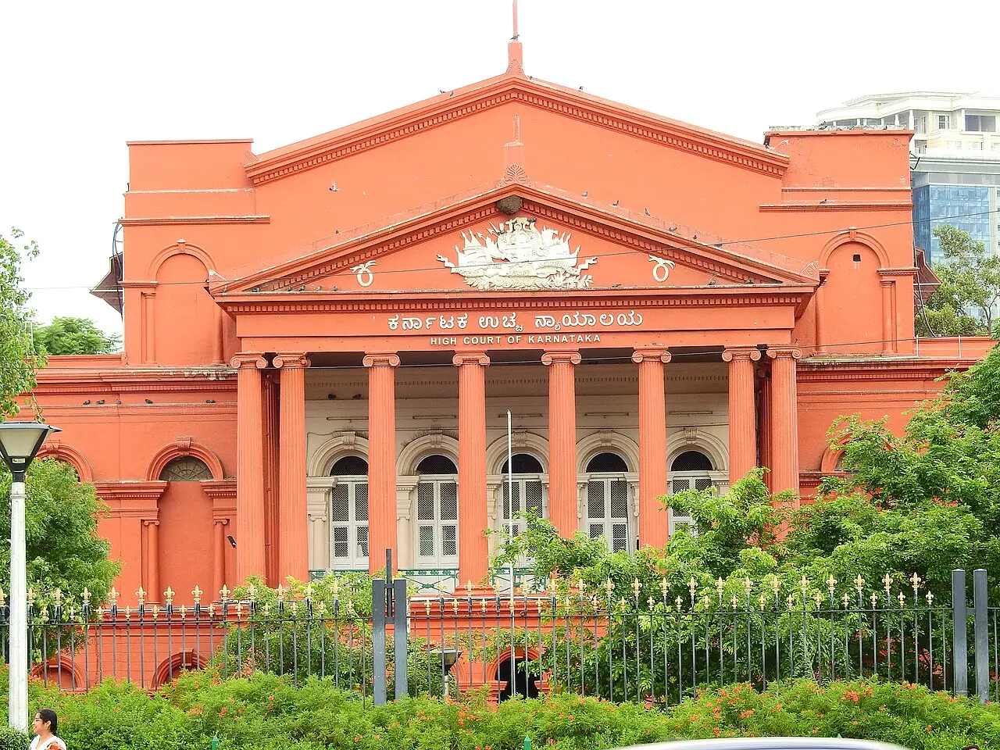
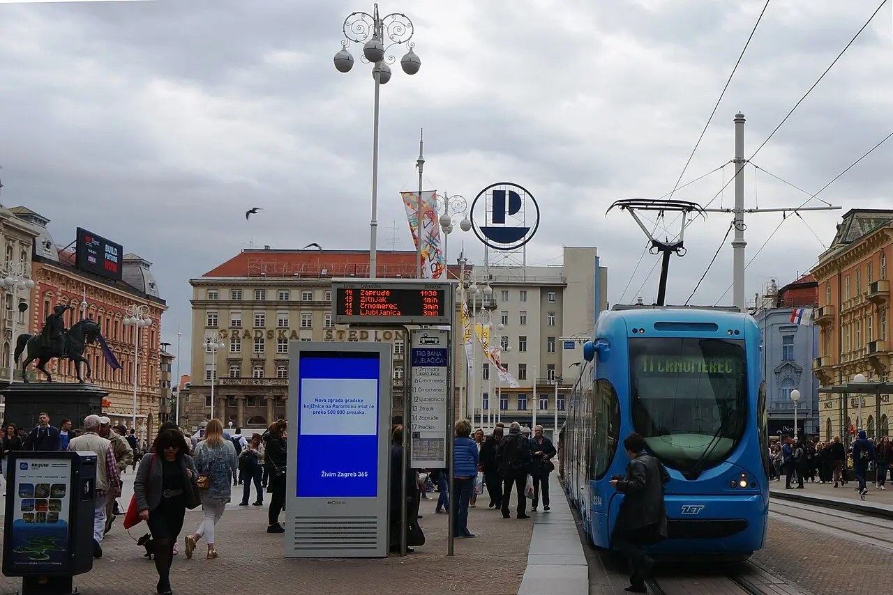
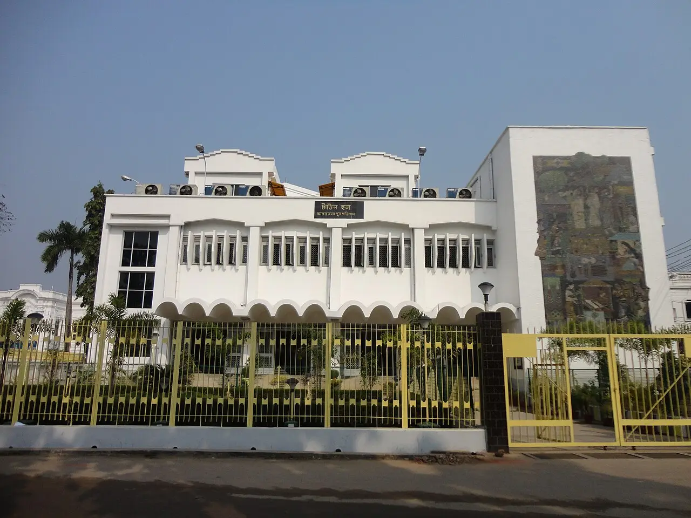

In pictures

File photo · 2019i


File photo · 2017i

 File photo · 2006
File photo · 2006i

 File photo · 2020
File photo · 2020i

 File photo · 2014
File photo · 2014i

i
.jpg){kind=link}

File photo · 2012i

 File photo · 2009
File photo · 2009i

Every update
- November 2026
Court rebukes police over prisoner's missed cancer care
Right upheldA prisoner with cancer missed his AIIMS follow-up as police sent no escort despite 34 jail requests, the High Court found. Two police officers were suspended; the DGP ordered an inquiry.
LiveLaw · Edition of Sat 28 NovCourt orders ₹1 lakh for illegally held nurse
Right upheldKarnataka's High Court ruled Ramdurg police illegally held a nurse for over 72 hours to pressure his brother, and ordered ₹1 lakh compensation. Belagavi's SP apologised; a departmental inquiry is under way.
The Hindu · Deccan Herald · Edition of Fri 27 NovThousands in Zagreb demand justice over patient's death
Life and safetyThousands rallied in Zagreb, about 1,000 in Rijeka, a month after patient Kristian Josip Periš died under restraint at a psychiatric clinic. Prosecutors are investigating aggravated murder; eight staff were detained; the hospital director resigned.
AFP (via Yahoo News) · Reuters (via Internazionale) · Edition of Sun 22 NovCourt lets custody death family view CCTV
DetentionThe Madras High Court on 20 Nov let lorry driver R Balakrishnan's family view CCTV from four police stations on 23 Nov. Police say he died by suicide in custody; the state opposed releasing footage.
DT Next · The Hindu · Edition of Sat 21 NovSix police suspended over Karnal custody death
Right upheldJitender Rana, 32, died in CIA-2 custody after police took him from home on 13 Nov, his family says. A DSP confirmed six police were suspended and booked for murder; no arrests reported.
Indian Express · Amar Ujala (Hindi) · Edition of Tue 17 NovTwo killed in Nuh police shootout
Lives lostSabir and Gabbar, suspected of cattle smuggling, died in a pre-dawn police shootout on 15 Nov; a third man is in hospital. Police say the men fired first; a magisterial inquiry has begun.
Scroll · The Tribune · Maktoob Media · Edition of Mon 16 NovCB-CID summons police over Madurai station death
DetentionThe CB-CID summoned the three suspended police over R Balakrishnan's death, and a magistrate held an inquiry at the station on 15 Nov. Police say suicide and released CCTV; the family alleges custodial killing.
DT Next · Deccan Chronicle (PTI) · Edition of Mon 16 NovLorry driver dies inside Madurai police station
Lives lostR Balakrishnan, 42, held overnight over missing cardamom, was found hanging in Chekkanurani station's toilet on 14 Nov. Police say suicide; his family alleges foul play. Three police were suspended; CB-CID will investigate.
The Federal · ETV Bharat · Edition of Sun 15 NovCourt upholds payout over inmate's suicide
Right upheldTripura High Court rejected the state's challenge and ordered ₹4 lakh compensation and action against officials over a 2024 inmate suicide after discriminatory treatment. The state had cited an inquiry clearing jail staff.
LiveLaw · Edition of Sat 14 NovCourt orders FIR against officer over arrest papers
Right upheldThe Allahabad High Court found an investigating officer later added arrest grounds to Mohd Yaseen's papers, freed him and ordered an FIR against the officer. The state said the grounds were supplied and signed.
LiveLaw · Edition of Fri 6 NovSupreme Court frees man held weeks after bail
Right upheldThe Supreme Court ordered Uttar Pradesh to free a man still jailed weeks after it granted him bail on 28 September, and to show why he should not be compensated; no state explanation was reported.
LiveLaw · Edition of Thu 5 NovBihar police officer fires on villagers, one dead
Lives lostA police ASI fired his service pistol at villagers in Madhubani district early Tuesday, killing one and injuring three, police say; he has been suspended, faces a murder case and is absconding.
Indian Express · Edition of Wed 4 Nov